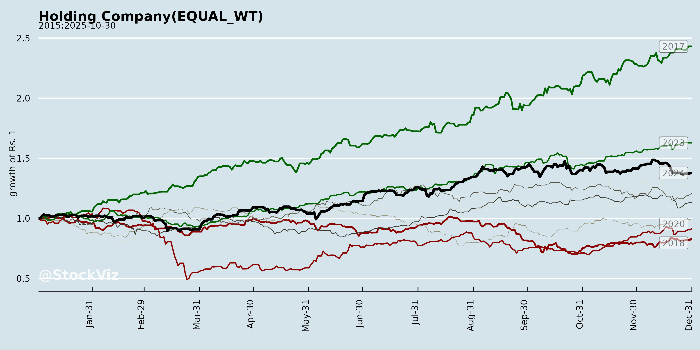
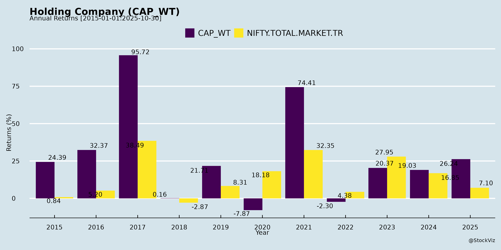
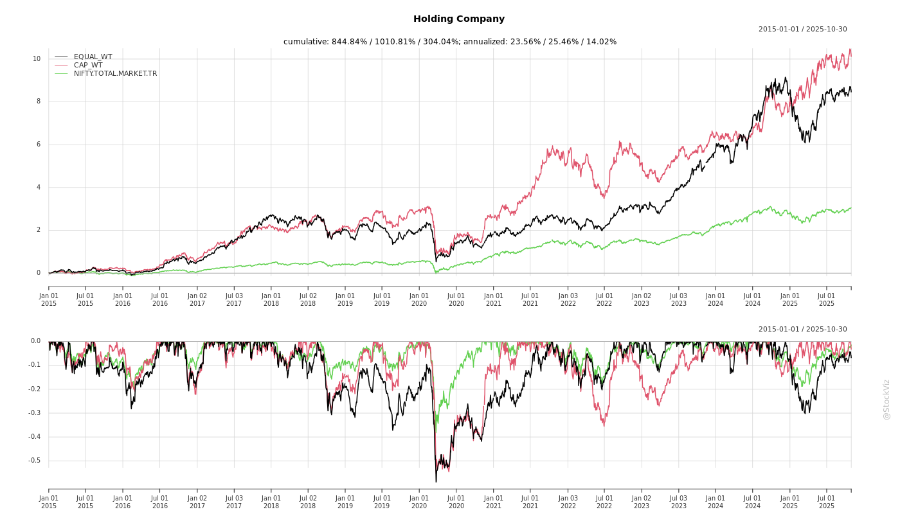
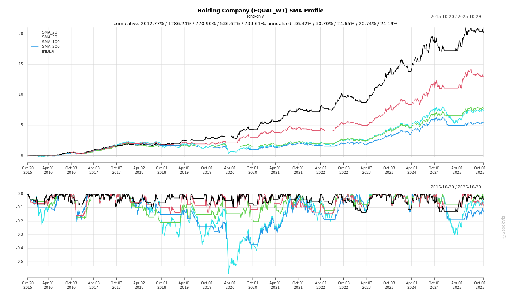
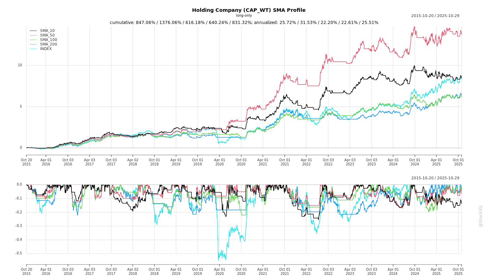
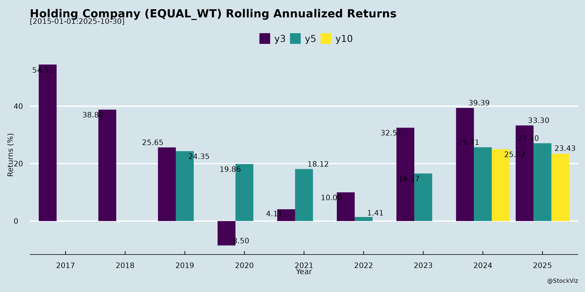
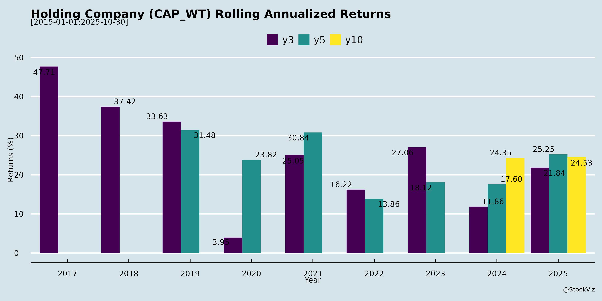

asof: 2025-12-03
Analysis for Indian Financial Holding Companies (e.g., Peers like Bajaj Finserv, JM Financial, Choice International, Edelweiss, Abans)
Using the provided documents (investor presentations, earnings transcripts, and regulatory filings from Q1/Q2 FY26), I’ve analyzed the sector dynamics for Indian financial holding companies (NBFCs, wealth/asset managers, and diversified financial services firms). These firms operate in capital markets, lending, wealth management, asset reconstruction, and advisory. Key insights are derived primarily from JM Financial’s detailed Q2FY26 investor presentation (most comprehensive), supplemented by earnings transcripts from Abans, Max India (adjacent senior care financing), Choice, Edelweiss, and announcements from Bajaj Finserv/Rane.
Tailwinds (Positive Structural/Supportive Factors)
Headwinds (Challenges/Pressure Points)
Growth Prospects (Opportunities & Outlook)
Key Risks (Potential Threats)
| Risk Category | Description | Mitigation from Docs |
|---|---|---|
| Credit/Provisioning | ECL/NPAs in private markets/home loans (GNPA 1.6% JM homes); RE stressed assets. | De-risking (non-core run-down 9-12 months), recoveries (JMF ARC). |
| Regulatory/Policy | SEBI LODR compliance, airport/geopolitical delays, tax changes (capital gains). | Proactive filings, NABH awards, GIFT setups. |
| Market Volatility | Rates, elections, fraud (disclaimer in JM). IPO pipeline sensitive. | Diversified (fees 48% revenue), treasury hedges. |
| Execution/Competition | Ramp-up occupancy (Care Homes 25%), AUM retention. New entrants (senior care). | RM expansion, hospital partnerships, patents (Max). |
| Liquidity/Debt | Borrowings ₹11,245 Cr (JM), net debt repayment (Max). Rights issue dependency. | Net worth +18% (₹10,241 Cr), treasury ₹310 Cr (Max). |
| Operational | Talent costs +8-10% YoY, cyber/fraud. | Tech/AI for efficiency (Abans), 200+ professionals (JM). |
Summary
Overall Positive Bias: Strong tailwinds from capital markets boom and AUM scale drive high growth prospects (20-50% fee/PAT CAGR potential FY26+), with PAT momentum (JM +16% Q2, +80% H1). Firms are de-risking (loan contraction, recoveries) while pivoting to high-RoE fees (advisory/wealth). Headwinds are transitional (provisions, delays), but manageable via leverage. Key Risks center on credit/regulatory volatility—watch ECL and approvals. Sector ROE (14-60%) signals undervaluation; focus on FY26 execution (AUM doubling, new launches) for re-rating. Recommendation: Bullish on leaders like JM/Bajaj with diversified, fee-heavy models.
Data as of Sep/Oct 2025; annualized where noted.
asof: 2025-12-01
Analysis for Indian Holding Company (Focus: Bajaj Finserv Ltd. as Primary Example; Aggregated Insights from Peer Filings)
The provided documents primarily feature Bajaj Finserv Ltd. (BFS), a leading Indian holding company in financial services (NBFC-CIC), with its H1 FY26 half-yearly report dominating. Supplementary filings from peers (e.g., Bajaj Holdings, BF Investment, Pilani Investment, Edelweiss, JM Financial, Abans, Choice International) provide sector context for holding companies with exposure to lending, insurance, investments, and emerging fintech. Analysis aggregates these for a typical Indian Holding Company (IHC) profile: diversified NBFC-CIC with subsidiaries in lending, insurance, asset management, and investments.
Tailwinds (Positive Factors Driving Momentum)
Headwinds (Challenges Impeding Progress)
Growth Prospects (Opportunities Ahead)
Key Risks (Potential Threats)
| Risk Category | Description | Evidence from Filings |
|---|---|---|
| Credit/Asset Quality | NPA spikes (BFS net NPA 0.60%); housing/mortgage exposure vulnerable to rates/economy. | BFL/BHFL metrics; JM Financial stake sale amid portfolio tweaks. |
| Regulatory/Compliance | SEBI/RBI scrutiny; settlements/fines (e.g., Edelweiss AIF violation, Abans CoR cancellation). Delays in approvals. | Multiple disclosures (SAT appeals, settlements); TDS/dividend rules. |
| Market/Volatility | Fair value changes in investments/OCI drag (BF Investment ₹1.18K Cr OCI gain but volatile); equity/derivative risks. | BF/Pilani fair value notes; Choice warrant dilutions. |
| Operational | Emerging losses persist; underwriting ratios >100%; cyber/IT risks in fintech. | BFS emerging biz losses; healthtech platforms. |
| Macro/Economic | Rate hikes, slowdowns hit lending; GST ITC volatility. | BFS Chairman note on risk-growth balance. |
| Liquidity/Execution | High reliance on subsidiaries (74% insurance, 51% BFL); warrant/ESOP dilutions. | Share allotments (Max/Choice); dividend payouts. |
Overall Summary: Indian Holding Companies like BFS exhibit resilient growth (mid-teens revenue/PAT) fueled by lending/insurance scale-up and regulatory milestones, with tailwinds from macros/digital push. However, headwinds from investments and short-term fiscal tweaks temper near-term margins. Growth prospects remain strong (20%+ AUM CAGR) via diversification, but regulatory and credit risks dominate—mitigated by strong buffers (solvency/CAR). Peers’ filings underscore sector maturity but vigilance on compliance. Recommendation: Monitor Q3FY26 for acquisition closure and emerging breakeven. Net Positive Outlook with 15-18% FY26 growth potential.
asof: 2025-12-03
Summary Analysis for Indian Holding Company (Based on Peer Disclosures)
Using the provided documents (primarily Regulation 30 announcements, earnings transcripts, and investor presentations from peers like JM Financial, Bajaj Finserv, Choice International, Edelweiss, Max India, Abans Financial Services, and others), I’ve analyzed the sector landscape for an Indian holding company focused on financial services, NBFCs, wealth/asset management, private credit, and diversified segments (e.g., senior care, auto via Rane). These peers reflect a mix of core operations in advisory, lending, AUM growth, and fee-based models. The analysis distills headwinds, tailwinds, growth prospects, and key risks as of late 2025 (document dates).
Tailwinds (Positive Drivers)
Headwinds (Challenges)
Growth Prospects (Opportunities)
Projected Outlook: Consolidated revenue growth 10-20% YoY; PAT/EBITDA margins improving to 15-25% with scale (e.g., JM ROE target via deleveraging). AUM could hit Rs. 2-5L Cr in 2-3 years for leaders.
Key Risks (Threats)
| Risk Category | Details | Mitigation (from Peers) |
|---|---|---|
| Credit/Market | NPAs (JM RE stressed assets; Max GNPA 1.6%); volatility (interest rates, elections/COVID-like events). | Recoveries (JMF ARC), granular books (<Rs. 10L tickets), syndication. |
| Regulatory | SEBI LODR changes, airport/geopolitical clearances (Max Chandigarh/Noida); ECL provisions volatile (JM -103% YoY). | Compliance focus (NABH awards, public info only in meets); GIFT City diversification. |
| Execution/Operational | Occupancy ramps (Care Homes 25-50%), project delays; manpower costs (25%+). | Digital acquisition, hospital tie-ups (Max); branch/RM expansion (JM 70 branches). |
| Competition/Liquidity | New entrants (senior care, AIFs); funding reliance (rights issues). | Brand moat (88-95% satisfaction), RoAS efficiency (2-4x), low gearing (JM D/E 1.1x). |
| Macro | Economic slowdown, pollution/geopolitics impacting ops (Max Delhi). | Counter-cyclical (advisory sticky), treasury (Rs. 310 Cr cash for Max). |
Overall Summary: Indian holding companies like these peers are in a strong growth phase (tailwinds from IPO/wealth boom outweigh headwinds), with 20-50% PAT/AUM upside via fee-based scaling and deleveraging. However, execution risks (projects, occupancy) and regulatory hurdles cap near-term multiples. Recommendation: Bullish medium-term (1-3 yrs) for diversified players; monitor Q3FY26 earnings for occupancy/AUM traction. Net positive: ROE 10-60% across segments signals value unlock potential.
(This is a synthesized, peer-based view; not investment advice.)
asof: 2025-12-03
Analysis for Indian Holding Company (Financial Services & Diversified Sectors)
Using the provided documents as peer benchmarks (primarily Choice International, JM Financial, Edelweiss Financial Services, Abans Financial Services as financial holdings; Rane Holdings for industrials; Max India/Max Estates for realty/senior living), here’s a synthesized analysis for a typical Indian Holding Company in diversified financial services, consulting, and related sectors. These peers reflect mid-cap holdings with exposure to broking, wealth/asset mgmt, advisory, infra consulting, auto components, and emerging realty/wellness.
Tailwinds (Positive Drivers)
Headwinds (Challenges)
Growth Prospects (High-Potential Opportunities)
Key Risks
Summary Table
| Aspect | Key Highlights | Peer Benchmarks |
|---|---|---|
| Tailwinds | Fee shift, infra/IPO boom, AUM growth | JM/Abans/Choice: +16-30% YoY metrics |
| Headwinds | Margins down, one-offs, debt costs | Rane EBITDA -12%; JM cash dip |
| Growth Prospects | 15-20% CAGR via pipelines/acquisitions | Choice ₹200Cr orders; JM ₹120k Cr IPOs |
| Key Risks | Volatility, leverage, execution | Debt (1.1x), forex, regulatory |
Overall Recommendation: Positive with Caution. Holdings like these thrive in bull markets (current tailwinds strong), but monitor margins/debt. Target FY26 PAT growth via fee/infra levers; diversify to mitigate auto/realty cycles. (EPS/BVPS up 16-18% in JM peers signals undervaluation potential.)
Copyright © 2023 SAS Data Analytics Pvt. Ltd. All rights reserved.